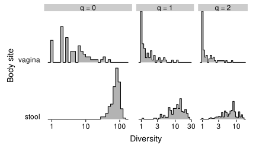
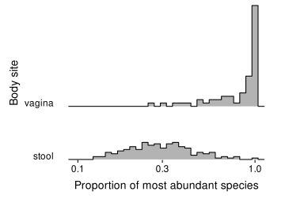
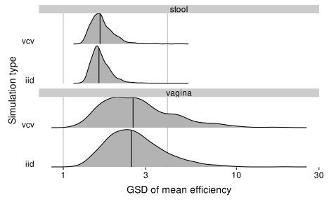
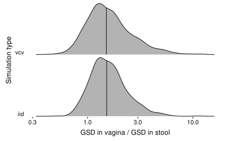
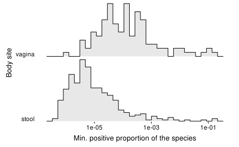
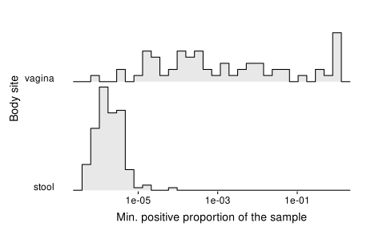
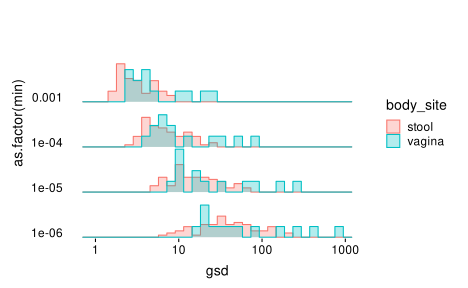
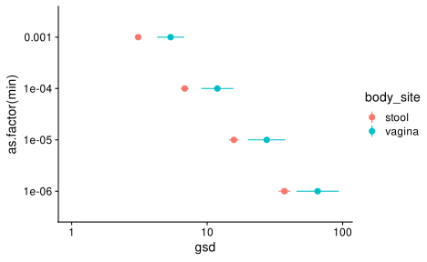
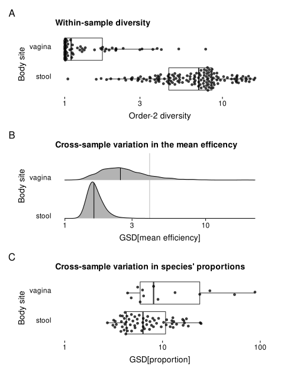
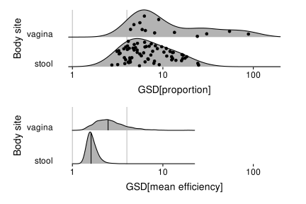

This report compares gut and vaginal microbiome profiles from the Human Microbiome Project to consider how the different ecological dynamics in each sample type might modulate the potential for bias to distort FCs in species proportions.
First, I load a phyloseq object with the Metaphlan3 profiles from the curatedMetagenomicData R package. This phyloseq object was created in notebook/_code/import-gut-datasets.Rmd. Filtering: I filter to just Bacteria, drop samples with no bacterial abundance, and drop species that don’t appear in at least two samples. I then renormalize to proportions. I also simplify the OTU names to just the species name.
Then, I compute the most abundant species and its proportion, and add these to the sample data. In addition, I add the plug-in estimates of three alpha-diversity metrics to the sample data. These are the hill numbers of order 0, 1, and 2, equivalent to richness, the exponential of Shannon entropy, and Inverse Simpson index, respectively.
#> here('notebook/_data/gut') %>% fs::dir_ls()
ps <- here('notebook/_data/gut',
'2021-03-31.HMP_2012.relative_abundance.phyloseq.rds'
) %>% readRDS %>%
filter_tax_table(kingdom == 'Bacteria') %>%
prune_samples(sample_sums(.) > 0, .) %>% # to drop samples w/o bacteria %>%
filter_taxa2(~sum(.>0) >= 2) %>%
transform_sample_counts(close_elts) %>%
mutate_tax_table(.otu = species)
# most abundant species and diversity
x <- ps %>% as_tibble
most_abundant <- x %>%
with_groups(.sample, slice_max, .abundance, n = 1) %>%
select(.sample, top_species = species, top_species_prop = .abundance)
fns <- list(
#> richness = ~sum(.x > 0),
diversity_q0 = ~sum(.x > 0),
diversity_q1 = ~vegan::diversity(.x, index = 'shannon') %>% exp,
diversity_q2 = ~vegan::diversity(.x, index = 'invsimpson')
) %>%
map(as_mapper)
mat <- ps %>% otu_table %>% orient_taxa(as = 'cols') %>% as('matrix')
div <- fns %>%
map_dfc(~apply(mat, 1, .x))
div1 <- bind_cols(most_abundant, div)
# join w/ ps object
ps <- ps %>%
left_join_sample_data(div1, by = '.sample')
rm(most_abundant, div, div1, x)
Let’s check the breakdown of samples by body site and subsite,
| body_site | n |
|---|---|
| nasalcavity | 93 |
| oralcavity | 414 |
| skin | 27 |
| stool | 147 |
| vagina | 67 |
| body_site | body_subsite | n |
|---|---|---|
| nasalcavity | anterior_nares | 93 |
| oralcavity | buccal_mucosa | 119 |
| oralcavity | hard_palate | 1 |
| oralcavity | keratinized_gingiva | 6 |
| oralcavity | palatine_tonsils | 6 |
| oralcavity | saliva | 5 |
| oralcavity | subgingival_plaque | 7 |
| oralcavity | supragingival_plaque | 127 |
| oralcavity | throat | 7 |
| oralcavity | tongue_dorsum | 136 |
| skin | l_retroauricular_crease | 9 |
| skin | r_retroauricular_crease | 18 |
| stool | stool | 147 |
| vagina | mid_vagina | 2 |
| vagina | posterior_fornix | 62 |
| vagina | vaginal_introitus | 3 |
Since only the posterior fornix of the vaginal samples has more than a few samples, we’ll restrict to just that subtype in what follows, along with the stool type/subtype.
ps_gv <- ps %>%
filter_sample_data(body_subsite %in% c('stool', 'posterior_fornix')) %>%
filter_taxa2(~ sum(.) > 0)
sam <- ps_gv %>% sample_data %>% as_tibble
Distribution of alpha diversity across samples
sam %>%
pivot_longer(starts_with('diversity')) %>%
mutate(
q = str_extract(name, '[0-2]'),
index = str_glue('q = {q}')
) %>%
ggplot(aes(y = body_site, x = value)) +
scale_x_log10() +
facet_grid(.~index, scales = 'free', space = 'free') +
theme_ridges(grid = FALSE, center_axis_labels = TRUE) +
scale_y_discrete(expand = expansion(mult = c(0.01, .7))) +
geom_density_ridges(stat = 'binline', scale = 0.90) +
labs(y = 'Body site', x = 'Diversity')

Distribution of the proportion of the most abundant species in each sample,
sam %>%
ggplot(aes(y = body_site, top_species_prop)) +
scale_x_log10() +
theme_ridges(grid = FALSE, center_axis_labels = TRUE) +
expand_limits(x = 0.1) +
scale_y_discrete(expand = expansion(mult = c(0.01, .7))) +
geom_density_ridges(stat = 'binline', scale = 1.90) +
labs(x = 'Proportion of most abundant species', y = 'Body site')

Which species tend to be most abundant?
make_table <- function(x) {
x %>%
mutate(
across(top_species, fct_infreq),
across(top_species, fct_lump_n, n = 5),
) %>%
count(top_species) %>%
mutate(frac = close_elts(n)) %>%
knitr::kable(digits = 2)
}
# Vagina
sam %>% filter(body_site == 'vagina') %>% make_table
| top_species | n | frac |
|---|---|---|
| Lactobacillus crispatus | 26 | 0.42 |
| Lactobacillus iners | 15 | 0.24 |
| Lactobacillus jensenii | 8 | 0.13 |
| Lactobacillus gasseri | 7 | 0.11 |
| Prevotella amnii | 2 | 0.03 |
| Other | 4 | 0.06 |
| top_species | n | frac |
|---|---|---|
| Bacteroides vulgatus | 45 | 0.31 |
| Bacteroides uniformis | 18 | 0.12 |
| Prevotella copri | 15 | 0.10 |
| Bacteroides stercoris | 13 | 0.09 |
| Bacteroides ovatus | 9 | 0.06 |
| Other | 47 | 0.32 |
In both cases, a small number of closely related species dominant most samples. Notably, we do not see Gardnerella or Lactobacillus BVAB1 in the vaginal samples, or any Firmicutes or other non-Bacteroidetes in the gut samples. It is unclear whether this is due to the cohorts or bias in the protocol.
This is more experimental. We can use the hillR package to compute alpha, beta, and gamma diversity as Hill numbers (effective number of species) for q = 0 (richness), q = 1 (exponential of Shannon entropy), and q = 2 (Inverse Simpson index). Note: Gamma diversity for q=0 (maybe also for other q) will increase with the number of samples, and so we’d expect it to be larger for stool simply due to the larger number of samples unless we subsample to a fixed number of samples for each body site. q=0 is also sensitive to read depth, which we don’t really have a way to account for here. Since we have a phylogeny, we can compute phylogenetic diversity as well as species diversity.
First, get equal numbers of stool and vaginal (posterior fornix) samples.
# A tibble: 2 × 3
body_site body_subsite n
<chr> <chr> <int>
1 stool stool 147
2 vagina posterior_fornix 62ps_list <- list(
stool = ps_gv %>% filter_sample_data(body_site == 'stool'),
vagina = ps_gv %>% filter_sample_data(body_site == 'vagina')
) %>%
# subsample to equal number of samples
map(filter_sample_data, row_number() <= 62) %>%
map(filter_taxa2, ~sum(.) > 0) %>%
map(orient_taxa, as = 'cols')
Then compute the diversity breakdown for each body site,
# Function that, given a phyloseq object, computes phylogenetic and species
# diversity measures for the requested q values
hill <- function(ps, q) {
ps <- ps %>% filter_taxa2(~sum(.) > 0) %>% orient_taxa(as = 'cols')
suppressMessages(
tibble(q = !!q) %>%
mutate(
div_taxa = map(q, ~hillR::hill_taxa_parti(otu_table(ps), .x)),
div_phylo = map(q, ~hillR::hill_phylo_parti(otu_table(ps), phy_tree(ps), .x)),
) %>%
unnest(c(div_taxa, div_phylo), names_repair = 'universal') %>%
select(q = q...1, starts_with(c('TD', 'PD')))
)
}
div <- ps_list %>%
map_dfr(hill, q = c(0, 1, 2), .id = 'body_site')
| body_site | q | TD_gamma | TD_alpha | TD_beta | PD_gamma | PD_alpha | PD_beta |
|---|---|---|---|---|---|---|---|
| stool | 0 | 347.0 | 80.1 | 4.3 | 37.6 | 12.5 | 3.0 |
| stool | 1 | 36.3 | 10.4 | 3.5 | 4.4 | 2.4 | 1.8 |
| stool | 2 | 18.7 | 5.1 | 3.7 | 2.6 | 1.5 | 1.7 |
| vagina | 0 | 112.0 | 7.3 | 15.4 | 18.5 | 2.1 | 9.0 |
| vagina | 1 | 6.2 | 1.6 | 4.0 | 1.7 | 0.8 | 2.2 |
| vagina | 2 | 4.1 | 1.3 | 3.2 | 1.2 | 0.7 | 1.8 |
div %>%
pivot_longer(starts_with(c('TD', 'PD'))) %>%
pivot_wider(names_from = body_site) %>%
knitr::kable(digits = 1)
| q | name | stool | vagina |
|---|---|---|---|
| 0 | TD_gamma | 347.0 | 112.0 |
| 0 | TD_alpha | 80.1 | 7.3 |
| 0 | TD_beta | 4.3 | 15.4 |
| 0 | PD_gamma | 37.6 | 18.5 |
| 0 | PD_alpha | 12.5 | 2.1 |
| 0 | PD_beta | 3.0 | 9.0 |
| 1 | TD_gamma | 36.3 | 6.2 |
| 1 | TD_alpha | 10.4 | 1.6 |
| 1 | TD_beta | 3.5 | 4.0 |
| 1 | PD_gamma | 4.4 | 1.7 |
| 1 | PD_alpha | 2.4 | 0.8 |
| 1 | PD_beta | 1.8 | 2.2 |
| 2 | TD_gamma | 18.7 | 4.1 |
| 2 | TD_alpha | 5.1 | 1.3 |
| 2 | TD_beta | 3.7 | 3.2 |
| 2 | PD_gamma | 2.6 | 1.2 |
| 2 | PD_alpha | 1.5 | 0.7 |
| 2 | PD_beta | 1.7 | 1.8 |
What is the GM, GSD, and GSE of order-2 diversity in each body site?
div_q2_stats <- sam %>%
with_groups(body_site, summarize,
gm = gm_mean(diversity_q2),
gsd = gm_sd(diversity_q2),
gse = gsd ^ (1 / sqrt(n()))
)
div_q2_stats %>%
knitr::kable(digits = 2)
| body_site | gm | gsd | gse |
|---|---|---|---|
| stool | 6.31 | 1.69 | 1.04 |
| vagina | 1.39 | 1.61 | 1.06 |
We’ll save this for use in the manuscript,
To assess the relative importance of bias for proportion-based DA analyses in the two ecosystems, we will consider the variation in the mean efficiency across samples for a large number of possible taxonomic biases, under the assumption that the measured profiles reflected the truth.
The following function samples random bias vectors from a multivariate lognormal distribution with a given covariance structure and geometric standard deviation across the efficiencies.
# Returns a matrix with taxa as columns
sample_bias <- function(n, gsd, vcv, taxa_as = 'cols') {
stopifnot(isSymmetric(vcv))
stopifnot(n > 1)
n_taxa <- nrow(vcv)
bias <- MASS::mvrnorm(n, mu = rep(0, n_taxa), Sigma = vcv) %>%
t %>%
scale %>%
{. * log(gsd)} %>%
exp
if (taxa_as == 'cols')
bias <- t(bias)
bias
}
#> x <- sample_bias(3, gsd = 3, phy_vcv)
#> x %>% apply(1, gm_sd) %>% head
#> x[1,] %>% qplot + scale_x_log10()
#> sample_bias(3, gsd = 3, phy_vcv, taxa_as = 'rows') %>% head
To choose a GSD for the simulations, let’s examine the bias estimated by McLaren, Willis, and Callahan (2019) for the Costea et al. (2017) Phase 2 experimental protocols,
bias_costea <- '_data/mclaren2019cons-table2-mod.tsv' %>% read_tsv
bias_costea_gsd <- bias_costea %>%
summarize(across(-Taxon, gm_sd))
bias_costea_gsd %>%
knitr::kable(digits = 1)
| H | Q | W | H/Q | H/W | Q/W |
|---|---|---|---|---|---|
| 7.7 | 2.9 | 3.2 | 4.8 | 3.6 | 2.4 |
The strength of bias as quantified by the GSD in species efficiencies is much larger for protocol H than the other two protocols. The GM of the GSD of the three protocols is 4.15. Let’s round this to a simple whole number 4 and take this as the GSD for our simulations.
For the IID and phylogenetic-covariance models, simulate 1000 replicate bias vectors.
For each replicate, compute the mean efficiency of each sample, assuming that the observed profiles are the truth and the simulated vector is the bias. Summarize the variation in the mean efficiency for the replicate by the GSD.
reps_me <- reps %>%
mutate(
mean_efficiency = map(bias, ~mean_efficiency(ps_gv, .x, type = 'actual')),
across(mean_efficiency, map, enframe, '.sample', 'mean_efficiency')
) %>%
select(-bias) %>%
unnest(mean_efficiency) %>%
left_join(ps_gv %>% sample_data %>% as_tibble, by = '.sample')
reps_me_summ <- reps_me %>%
with_groups(c(sim_type, body_site, .idx), summarize,
across(mean_efficiency, gm_sd)
)
reps_me_summ %>%
ggplot(aes(y = sim_type, x = mean_efficiency)) +
facet_wrap(~body_site, ncol = 1) +
scale_x_log10() +
geom_vline(xintercept = c(1,gsd_sim), color = 'grey') +
theme_ridges(grid = FALSE, center_axis_labels = TRUE) +
scale_y_discrete(expand = expansion(mult = c(0.01, .7))) +
stat_density_ridges(quantile_lines = TRUE, quantiles = c(0.5), scale = 0.95) +
labs(x = 'GSD of mean efficiency', y = 'Simulation type')

Note, despite always forcing a GSD of 3 on the efficiencies, we sometimes see GSDs in the mean efficiency that are larger than 3, particularly in the vaginal communities. This makes some sense: We expect the variation in the efficiency of vaginal communities to be driven by a just a few species, and the there is a non-negligible chance that they end up with a much higher/lower mean efficiency than typical.
Question: How does the mean efficiency GSD scale with the efficiency GSD? When we compare this variation to that in the species proportions, the scale/value of GSD will matter. However, it might not matter for comparing to the vaginal MB.
How much greater is the GM of the GSD in the vaginal comms versus stool?
reps_me_summ %>%
with_groups(c(body_site, sim_type), summarize,
across(mean_efficiency, gm_mean)) %>%
pivot_wider(names_from = body_site, values_from = mean_efficiency) %>%
mutate(vagina/stool) %>%
knitr::kable(digits = 2)
| sim_type | stool | vagina | vagina/stool |
|---|---|---|---|
| iid | 1.65 | 2.61 | 1.58 |
| vcv | 1.68 | 2.70 | 1.61 |
Using the median instead of the GM should give a similar answer,
reps_me_summ %>%
with_groups(c(body_site, sim_type), summarize,
across(mean_efficiency, median)) %>%
pivot_wider(names_from = body_site, values_from = mean_efficiency) %>%
mutate(vagina/stool) %>%
knitr::kable(digits = 2)
| sim_type | stool | vagina | vagina/stool |
|---|---|---|---|
| iid | 1.61 | 2.48 | 1.54 |
| vcv | 1.63 | 2.53 | 1.55 |
Note that the type of simulation has a negligible impact on these numbers.
Let’s compute the GM, GSD, and GSE of the GM for the difference (ratio) between gut and vaginal samples.
reps_me_summ %>%
with_groups(c(body_site, sim_type), summarize,
GM = gm_mean(mean_efficiency),
GSD = gm_sd(mean_efficiency),
# GSE = exp(sd(log(mean_efficiency)) / sqrt(n())),
GSE = GSD ^ (1 / sqrt(n()))
) %>%
knitr::kable(digits = 4)
| body_site | sim_type | GM | GSD | GSE |
|---|---|---|---|---|
| stool | iid | 1.6452 | 1.1374 | 1.0041 |
| stool | vcv | 1.6771 | 1.1730 | 1.0051 |
| vagina | iid | 2.6069 | 1.4565 | 1.0120 |
| vagina | vcv | 2.7031 | 1.5930 | 1.0148 |
And if the difference,
reps_me_summ_diff <- reps_me_summ %>%
pivot_wider(names_from = body_site, values_from = mean_efficiency) %>%
mutate(ratio = vagina / stool) %>%
with_groups(c(sim_type), summarize,
gm = gm_mean(ratio),
gsd = gm_sd(ratio),
gse = gsd ^ (1 / sqrt(n()))
)
reps_me_summ_diff %>%
knitr::kable(digits = 3)
| sim_type | gm | gsd | gse |
|---|---|---|---|
| iid | 1.585 | 1.485 | 1.013 |
| vcv | 1.612 | 1.636 | 1.016 |
Let’s also check the distribution of the ratio (geometric difference),
reps_me_summ %>%
pivot_wider(names_from = body_site, values_from = mean_efficiency) %>%
mutate(ratio = vagina / stool) %>%
ggplot(aes(y = sim_type, x = ratio)) +
scale_x_log10() +
theme_ridges(grid = FALSE, center_axis_labels = TRUE) +
scale_y_discrete(expand = expansion(mult = c(0.01, .7))) +
stat_density_ridges(quantile_lines = TRUE, quantiles = c(0.5), scale = 0.95) +
labs(y = 'Simulation type', x = 'GSD in vagina / GSD in stool')

Note that there is a decent fraction of simulations in which the variation in the mean efficiency is lower in the vaginal samples, despite it typically being higher.
The large number of simulations (1000) makes the GSE very small; however, this number does not account for the limited number of gut and vaginal samples. In other words, we have precisely estimated the difference for these particular samples.
For analysis of LFCs in proportions, what matters is the variation in the species proportions relative to the mean efficiency. Therefore we should also consider whether the species proportions vary less in the more diverse gut. To do so, I will measure the GSD in the (zero-replaced) proportion of each species within the given sample type that passes a prevalence filter within that sample type.
To figure out how to replace zeros, let’s check what the min positive abundances look like for various species.
x <- ps_gv %>%
as_tibble
x %>%
filter(.abundance > 0) %>%
with_groups(c(.otu, body_site), summarize,
min_pos = min(.abundance)) %>%
ggplot(aes(x = min_pos, y = body_site)) +
scale_x_log10() +
labs(x = 'Min. positive proportion of the species', y = 'Body site') +
theme_ridges(grid = FALSE, center_axis_labels = TRUE) +
scale_y_discrete(expand = expansion(mult = c(0.01, .7))) +
geom_density_ridges(stat = 'binline', alpha = 0.3, scale = 0.95)

What about the min positive proportion in the sample?
x %>%
filter(.abundance > 0) %>%
with_groups(c(.sample, body_site), summarize,
min_pos = min(.abundance)) %>%
ggplot(aes(x = min_pos, y = body_site)) +
scale_x_log10() +
labs(x = 'Min. positive proportion of the sample', y = 'Body site') +
theme_ridges(grid = FALSE, center_axis_labels = TRUE) +
scale_y_discrete(expand = expansion(mult = c(0.01, .7))) +
geom_density_ridges(stat = 'binline', alpha = 0.3, scale = 0.95)

We also need to choose what species to consider as candidates for a DA analysis in the given ecosystem. For simplicity, let’s use the filtering criterion we used in the MOMSPI diversity regression. We’ll do this filtering and the subsequent analysis separately within each sample type.
ps_list <- list(
stool = ps_gv %>% filter_sample_data(body_site == 'stool'),
vagina = ps_gv %>% filter_sample_data(body_site == 'vagina')
) %>%
map(filter_taxa2, ~ mean(. >= 1e-2) >= 0.05 | mean(. >= 1e-3) >= 0.15) %>%
map(orient_taxa, as = 'cols')
ps_list %>% map_int(nsamples)
stool vagina
147 62 stool vagina
66 13 Note that there are many more species passing this criterion in stool.
I will replace zeros by adding a small pseudo-value to all proportions. I expect the choice of pseudo-value will have a large impact on the GSDs of a species, so I will try a wide range of values. Note, I am not renormalizing the proportions after adding the psuedo-value, since we’ve already filtered out many species. However, the renormalization would involve dividing all proprotions by the same factor and so would not affect the resulting GSDs. (This factor is equal to \(1 + k\episilon\), where \(k\) is the number of pre-filtered species and \(\epsilon\) is the pseudo-value. Since \(\episilon \ll 1/k\) except perhaps for the highest \(\epsilon = 10^{-3}\), this factor is generally close to 1 anyways.)
gsd %>%
ggplot(aes(x = gsd, y = as.factor(min),
fill = body_site, color = body_site)) +
# facet_wrap(~body_site) +
scale_x_log10() +
expand_limits(x = 1) +
theme_ridges(grid = FALSE, center_axis_labels = TRUE) +
scale_y_discrete(expand = expansion(mult = c(0.01, .7))) +
geom_density_ridges(stat = 'binline', scale = 0.95, alpha = 0.3)

The GSDs tend to be larger in the vaginal microbiome, regardless of which min value is used.
What is the difference between gut and vaginal GSDs? Determine by taking the geometric mean (GM) of the GSDs of various species.
gsd %>%
ggplot(aes(x = gsd, y = as.factor(min),
fill = body_site, color = body_site)) +
scale_x_log10() +
stat_summary() +
expand_limits(x = 1)

species_gsd_stats <- gsd %>%
with_groups(c(body_site, min), summarize, across(gsd, gm_mean)) %>%
pivot_wider(names_from = body_site, values_from = gsd) %>%
mutate(vagina/stool)
species_gsd_stats
# A tibble: 4 × 4
min stool vagina `vagina/stool`
<dbl> <dbl> <dbl> <dbl>
1 0.000001 37.2 65.4 1.76
2 0.00001 15.7 27.5 1.75
3 0.0001 6.82 11.9 1.74
4 0.001 3.09 5.37 1.74Note, the difference between body sites has hardly any dependence on the pseudo-value.
species_gsd_stats %>%
janitor::clean_names() %>%
write_csv(path('_output', 'species_gsd_stats.csv'))
# Alpha diversity
p_div <- sam %>%
ggplot(aes(y = body_site, x = diversity_q2)) +
scale_x_log10() +
geom_boxplot(outlier.shape = NA) +
geom_quasirandom(groupOnX = FALSE, alpha = 0.75) +
# theme_ridges(grid = FALSE, center_axis_labels = TRUE) +
# scale_y_discrete(expand = expansion(mult = c(0.01, .7))) +
# geom_density_ridges(stat = 'binline', scale = 0.90) +
labs(y = 'Body site', x = 'Order-2 diversity')
# p_div
# Variation in species proportions
p_species_gsd <- gsd %>%
filter(min == 1e-4) %>%
ggplot(aes(x = gsd, y = body_site)) +
labs(y = 'Body site', x = "GSD[proportion]") +
scale_x_log10() +
expand_limits(x = 1) +
# geom_vline(xintercept = c(1,gsd_sim), color = 'grey') +
geom_boxplot(outlier.shape = NA) +
geom_quasirandom(groupOnX = FALSE, alpha = 0.75)
# theme_ridges(grid = FALSE, center_axis_labels = TRUE) +
# scale_y_discrete(expand = expansion(mult = c(0.01, .7))) +
# geom_density_ridges(stat = 'binline', scale = 0.90)
# GSD in mean eff in simulations
p_me_gsd <- reps_me_summ %>%
filter(sim_type == 'iid') %>%
ggplot(aes(y = body_site, x = mean_efficiency)) +
scale_x_log10() +
# expand_limits(x = 0.85) +
geom_vline(xintercept = c(gsd_sim), color = 'grey') +
theme_ridges(grid = FALSE, center_axis_labels = TRUE) +
scale_y_discrete(expand = expansion(mult = c(0.01, .7))) +
stat_density_ridges(quantile_lines = TRUE, quantiles = c(0.5), scale = 0.95) +
labs(x = 'GSD[mean efficiency]', y = 'Body site')
# p_me_gsd
(p_div + ggtitle('Within-sample diversity')) /
(p_me_gsd + ggtitle("Cross-sample variation in the mean efficency")) /
(p_species_gsd + ggtitle("Cross-sample variation in species' proportions")) +
plot_annotation(tag_levels = 'A') +
plot_layout() &
theme_ridges(grid = FALSE, center_axis_labels = TRUE)

We can also try putting the GSD in proportions and in mean efficiency on a common scale,
# Variation in species proportions
p_species_gsd <- gsd %>%
filter(min == 1e-4) %>%
ggplot(aes(x = gsd, y = body_site)) +
labs(y = 'Body site', x = "GSD[proportion]") +
scale_x_log10(limits = c(0.9, 200)) +
theme_ridges(grid = FALSE, center_axis_labels = TRUE) +
geom_vline(xintercept = c(1,gsd_sim), color = 'grey') +
scale_y_discrete(expand = expansion(mult = c(0.01, .7))) +
# geom_density_ridges(stat = 'binline', scale = 0.90)
geom_density_ridges(jittered_points = TRUE, scale = 0.95)
# GSD in mean eff in simulations
p_me_gsd <- reps_me_summ %>%
filter(sim_type == 'iid') %>%
ggplot(aes(y = body_site, x = mean_efficiency)) +
scale_x_log10(limits = c(0.9, 200)) +
geom_vline(xintercept = c(1,gsd_sim), color = 'grey') +
theme_ridges(grid = FALSE, center_axis_labels = TRUE) +
scale_y_discrete(expand = expansion(mult = c(0.01, .7))) +
stat_density_ridges(quantile_lines = TRUE, quantiles = c(0.5), scale = 0.95) +
labs(x = 'GSD[mean efficiency]', y = 'Body site')
# p_me_gsd
p_species_gsd / p_me_gsd

This plot makes it clear that the GSD in mean efficiency is generally smaller than that in the species proportions, suggesting that for the strength of bias in these simulations (GSD=4), that bias is unlikely to have a large impact. However, the GSD in species proportions is highly dependent on the pseudocount; also, our choice of GSD=4 is simply for illustration. Thus we should not overinterpret this result.
sessioninfo::session_info()
─ Session info ───────────────────────────────────────────────────────────
setting value
version R version 4.1.2 (2021-11-01)
os Arch Linux
system x86_64, linux-gnu
ui X11
language (EN)
collate en_US.UTF-8
ctype en_US.UTF-8
tz America/New_York
date 2022-03-21
pandoc 2.14.2 @ /usr/bin/ (via rmarkdown)
─ Packages ───────────────────────────────────────────────────────────────
package * version date (UTC) lib source
ade4 1.7-18 2021-09-16 [1] CRAN (R 4.1.1)
ape 5.6-1 2022-01-07 [1] CRAN (R 4.1.2)
assertthat 0.2.1 2019-03-21 [1] CRAN (R 4.0.0)
backports 1.4.1 2021-12-13 [1] CRAN (R 4.1.2)
beeswarm 0.4.0 2021-06-01 [1] CRAN (R 4.1.0)
Biobase 2.52.0 2021-05-19 [1] Bioconductor
BiocGenerics 0.38.0 2021-05-19 [1] Bioconductor
biomformat 1.20.0 2021-05-19 [1] Bioconductor
Biostrings 2.60.2 2021-08-05 [1] Bioconductor
bit 4.0.4 2020-08-04 [1] CRAN (R 4.0.2)
bit64 4.0.5 2020-08-30 [1] CRAN (R 4.0.2)
bitops 1.0-7 2021-04-24 [1] CRAN (R 4.1.0)
bookdown 0.24 2021-09-02 [1] CRAN (R 4.1.1)
broom 0.7.11 2022-01-03 [1] CRAN (R 4.1.2)
bslib 0.3.1 2021-10-06 [1] CRAN (R 4.1.1)
cachem 1.0.6 2021-08-19 [1] CRAN (R 4.1.1)
cellranger 1.1.0 2016-07-27 [1] CRAN (R 4.0.0)
cli 3.2.0 2022-02-14 [1] CRAN (R 4.1.2)
cluster 2.1.2 2021-04-17 [2] CRAN (R 4.1.2)
clusterGeneration 1.3.7 2020-12-15 [1] CRAN (R 4.1.1)
coda 0.19-4 2020-09-30 [1] CRAN (R 4.0.2)
codetools 0.2-18 2020-11-04 [2] CRAN (R 4.1.2)
colorspace 2.0-2 2021-08-11 [1] R-Forge (R 4.1.1)
combinat 0.0-8 2012-10-29 [1] CRAN (R 4.1.1)
cowplot * 1.1.1 2021-08-27 [1] Github (wilkelab/cowplot@555c9ae)
crayon 1.5.0 2022-02-14 [1] CRAN (R 4.1.2)
data.table 1.14.2 2021-09-27 [1] CRAN (R 4.1.1)
DBI 1.1.2 2021-12-20 [1] CRAN (R 4.1.2)
dbplyr 2.1.1 2021-04-06 [1] CRAN (R 4.0.5)
deSolve 1.30 2021-10-07 [1] CRAN (R 4.1.1)
digest 0.6.29 2021-12-01 [1] CRAN (R 4.1.2)
distill 1.3 2021-10-13 [1] CRAN (R 4.1.1)
distributional 0.3.0 2022-01-05 [1] CRAN (R 4.1.2)
downlit 0.4.0 2021-10-29 [1] CRAN (R 4.1.2)
dplyr * 1.0.8 2022-02-08 [1] CRAN (R 4.1.2)
ellipsis 0.3.2 2021-04-29 [1] CRAN (R 4.1.0)
evaluate 0.14 2019-05-28 [1] CRAN (R 4.0.0)
expm 0.999-6 2021-01-13 [1] CRAN (R 4.1.1)
fansi 1.0.2 2022-01-14 [1] CRAN (R 4.1.2)
farver 2.1.0 2021-02-28 [1] CRAN (R 4.0.4)
fastmap 1.1.0 2021-01-25 [1] CRAN (R 4.0.4)
fastmatch 1.1-3 2021-07-23 [1] CRAN (R 4.1.0)
forcats * 0.5.1 2021-01-27 [1] CRAN (R 4.0.4)
foreach 1.5.1 2020-10-15 [1] CRAN (R 4.0.3)
fs * 1.5.2 2021-12-08 [1] CRAN (R 4.1.2)
geiger 2.0.7 2020-06-02 [1] CRAN (R 4.1.1)
generics 0.1.2 2022-01-31 [1] CRAN (R 4.1.2)
GenomeInfoDb 1.28.4 2021-09-05 [1] Bioconductor
GenomeInfoDbData 1.2.6 2021-05-31 [1] Bioconductor
ggbeeswarm * 0.6.0 2017-08-07 [1] CRAN (R 4.0.0)
ggdist * 3.0.1 2021-11-30 [1] CRAN (R 4.1.2)
ggplot2 * 3.3.5 2021-06-25 [1] CRAN (R 4.1.0)
ggridges * 0.5.3 2021-01-08 [1] CRAN (R 4.0.4)
glue 1.6.1 2022-01-22 [1] CRAN (R 4.1.2)
gtable 0.3.0 2019-03-25 [1] CRAN (R 4.0.0)
haven 2.4.3 2021-08-04 [1] CRAN (R 4.1.1)
here * 1.0.1 2020-12-13 [1] CRAN (R 4.0.5)
highr 0.9 2021-04-16 [1] CRAN (R 4.1.0)
hillR 0.5.1 2021-03-02 [1] CRAN (R 4.1.2)
hms 1.1.1 2021-09-26 [1] CRAN (R 4.1.1)
htmltools 0.5.2 2021-08-25 [1] CRAN (R 4.1.1)
httr 1.4.2 2020-07-20 [1] CRAN (R 4.0.2)
igraph 1.2.11 2022-01-04 [1] CRAN (R 4.1.2)
IRanges 2.26.0 2021-05-19 [1] Bioconductor
iterators 1.0.13 2020-10-15 [1] CRAN (R 4.0.3)
janitor 2.1.0 2021-01-05 [1] CRAN (R 4.0.4)
jquerylib 0.1.4 2021-04-26 [1] CRAN (R 4.1.0)
jsonlite 1.7.3 2022-01-17 [1] CRAN (R 4.1.2)
knitr 1.37 2021-12-16 [1] CRAN (R 4.1.2)
lattice 0.20-45 2021-09-22 [2] CRAN (R 4.1.2)
lifecycle 1.0.1 2021-09-24 [1] CRAN (R 4.1.1)
lubridate 1.8.0 2021-10-07 [1] CRAN (R 4.1.1)
magrittr 2.0.2 2022-01-26 [1] CRAN (R 4.1.2)
maps 3.4.0 2021-09-25 [1] CRAN (R 4.1.1)
MASS 7.3-54 2021-05-03 [2] CRAN (R 4.1.2)
Matrix 1.3-4 2021-06-01 [2] CRAN (R 4.1.2)
memoise 2.0.1 2021-11-26 [1] CRAN (R 4.1.2)
metacal * 0.2.0.9010 2022-02-15 [1] Github (mikemc/metacal@f56792d)
mgcv 1.8-38 2021-10-06 [2] CRAN (R 4.1.2)
mnormt 2.0.2 2020-09-01 [1] CRAN (R 4.1.1)
modelr 0.1.8 2020-05-19 [1] CRAN (R 4.0.0)
multtest 2.48.0 2021-05-19 [1] Bioconductor
munsell 0.5.0 2018-06-12 [1] CRAN (R 4.0.0)
mvtnorm 1.1-3 2021-10-08 [1] CRAN (R 4.1.1)
nlme 3.1-153 2021-09-07 [2] CRAN (R 4.1.2)
numDeriv 2016.8-1.1 2019-06-06 [1] CRAN (R 4.0.0)
nvimcom * 0.9-102 2022-03-12 [1] local
patchwork * 1.1.1 2020-12-17 [1] CRAN (R 4.0.3)
permute 0.9-5 2019-03-12 [1] CRAN (R 4.0.0)
phangorn 2.8.1 2021-12-15 [1] CRAN (R 4.1.2)
phyloseq * 1.36.0 2021-05-19 [1] Bioconductor
phytools 1.0-1 2022-01-03 [1] CRAN (R 4.1.2)
pillar 1.7.0 2022-02-01 [1] CRAN (R 4.1.2)
pkgconfig 2.0.3 2019-09-22 [1] CRAN (R 4.0.0)
plotrix 3.8-2 2021-09-08 [1] CRAN (R 4.1.1)
plyr 1.8.6 2020-03-03 [1] CRAN (R 4.0.0)
purrr * 0.3.4 2020-04-17 [1] CRAN (R 4.0.0)
quadprog 1.5-8 2019-11-20 [1] CRAN (R 4.0.0)
R6 2.5.1 2021-08-19 [1] CRAN (R 4.1.1)
Rcpp 1.0.8 2022-01-13 [1] CRAN (R 4.1.2)
RCurl 1.98-1.5 2021-09-17 [1] CRAN (R 4.1.1)
readr * 2.1.1 2021-11-30 [1] CRAN (R 4.1.2)
readxl 1.3.1 2019-03-13 [1] CRAN (R 4.0.0)
reprex 2.0.1 2021-08-05 [1] CRAN (R 4.1.1)
reshape2 1.4.4 2020-04-09 [1] CRAN (R 4.0.0)
rhdf5 2.36.0 2021-05-19 [1] Bioconductor
rhdf5filters 1.4.0 2021-05-19 [1] Bioconductor
Rhdf5lib 1.14.2 2021-07-06 [1] Bioconductor
rlang 1.0.1 2022-02-03 [1] CRAN (R 4.1.2)
rmarkdown * 2.11 2021-09-14 [1] CRAN (R 4.1.1)
rprojroot 2.0.2 2020-11-15 [1] CRAN (R 4.0.3)
rstudioapi 0.13 2020-11-12 [1] CRAN (R 4.0.3)
rvest 1.0.2 2021-10-16 [1] CRAN (R 4.1.1)
S4Vectors 0.30.2 2021-10-03 [1] Bioconductor
sass 0.4.0 2021-05-12 [1] CRAN (R 4.1.0)
scales 1.1.1 2020-05-11 [1] CRAN (R 4.0.0)
scatterplot3d 0.3-41 2018-03-14 [1] CRAN (R 4.1.1)
sessioninfo 1.2.2 2021-12-06 [1] CRAN (R 4.1.2)
snakecase 0.11.0 2019-05-25 [1] CRAN (R 4.0.0)
speedyseq * 0.5.3.9018 2021-06-29 [1] Github (mikemc/speedyseq@ceb941f)
stringi 1.7.6 2021-11-29 [1] CRAN (R 4.1.2)
stringr * 1.4.0 2019-02-10 [1] CRAN (R 4.0.0)
subplex 1.7 2022-01-16 [1] CRAN (R 4.1.2)
survival 3.2-13 2021-08-24 [2] CRAN (R 4.1.2)
tibble * 3.1.6 2021-11-07 [1] CRAN (R 4.1.2)
tidyr * 1.2.0 2022-02-01 [1] CRAN (R 4.1.2)
tidyselect 1.1.1 2021-04-30 [1] CRAN (R 4.1.0)
tidyverse * 1.3.1 2021-04-15 [1] CRAN (R 4.1.0)
tmvnsim 1.0-2 2016-12-15 [1] CRAN (R 4.1.1)
tzdb 0.2.0 2021-10-27 [1] CRAN (R 4.1.2)
useful 1.2.6 2018-10-08 [1] CRAN (R 4.0.0)
utf8 1.2.2 2021-07-24 [1] CRAN (R 4.1.0)
vctrs 0.3.8 2021-04-29 [1] CRAN (R 4.1.0)
vegan 2.5-7 2020-11-28 [1] CRAN (R 4.0.3)
vipor 0.4.5 2017-03-22 [1] CRAN (R 4.0.0)
vroom 1.5.7 2021-11-30 [1] CRAN (R 4.1.2)
withr 2.4.3 2021-11-30 [1] CRAN (R 4.1.2)
xfun 0.29 2021-12-14 [1] CRAN (R 4.1.2)
xml2 1.3.3 2021-11-30 [1] CRAN (R 4.1.2)
XVector 0.32.0 2021-05-19 [1] Bioconductor
yaml 2.2.2 2022-01-25 [1] CRAN (R 4.1.2)
zlibbioc 1.38.0 2021-05-19 [1] Bioconductor
[1] /home/michael/.local/lib/R/library
[2] /usr/lib/R/library
──────────────────────────────────────────────────────────────────────────